전기산업기사 (2016-08-21 기출문제)
1과목: 전기자기학
1. 환상철심에 감은 코일에 5A의 전류를 흘려 2000AT의 기자력을 발생시키고자 한다면, 코일의 권수는 몇 회로 하면 되는가?
- 100회
- 200회
- 300회
- 400회
(정답률: 88%)

2. 임의의 점의 전계가 E=Exi+Eyj+Ezk로 표시 되었을 때,
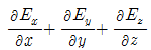
와 같은 의미를 갖는 것은?- ▽×E
- ▽2E
- ▽ ㆍ E
- grad
(정답률: 69%)
3. 도체의 저항에 관한 설명으로 옳은 것은?
- 도체의 단면적에 비례한다.
- 도체의 길이에 반비례한다.
- 저항률이 클수록 저항은 적어진다.
- 온도가 올라가면 저항값이 증가한다.
(정답률: 71%)
4. x축 상에서 x=1m, 2m, 3m, 4m 인 각 점에 2[nC], 4[nC], 6[nC], 8[nC] 의 점전하가 존재할 때 이들에 의하여 전계 내에 저장되는 정전 에너지는 몇 [nJ] 인가?
- 483
- 644
- 725
- 966
(정답률: 51%)
5. 진공 중에 10-10[C]의 점전하가 있을 때 전하에서 2[m] 떨어진 점의 전계는 몇 [V/m] 인가?
- 2.25×10-1
- 4.50×10-1
- 2.25×10-2
- 4.50×10-2
(정답률: 67%)
6. 유전체 내의 전계 E와 분극의 세기 P의 관계식은?
- P=E0(Es-1)E
- P=Es(E0-1)E
- P=E0(Es+1)E
- P=Es(E0+1)E
(정답률: 81%)
7. 일반적으로 도체를 관통하는 자속이 변화하든가 또는 자속과 도체가 상대적으로 운동하여 도체 내의 자속이 시간적 변화를 일으키면, 이 변화를 막기 위하여 도체 내에 국부적으로 형성되는 임의의 폐회로를 따라 전류가 유기되는데 이 전류를 무엇이라 하는가?
- 변위전류
- 대칭전류
- 와전류
- 도전전류
(정답률: 72%)
8. 철심이 들어있는 환상코일이 있다. 1차 코일의 권수N1=100회일 때 자기인덕턴스는 0.01[H] 였다. 이 철심에 2차 코일 N2=200회를 감았을 때 1, 2차 코일의 상호인덕턴스는 몇 [H]인가? (단, 이 경우 결합계수 k=1로 한다.)
- 0.01
- 0.02
- 0.03
- 0.04
(정답률: 65%)
9. 정전용량 5[㎌]인 콘덴서를 200[V]로 충전하여 자기인덕턴스 20[mH], 저항 0[Ω]인 코일을 통해 방전할 때 생기는 전기진동 주파수는 약 몇 [Hz]이며, 코일에 축적되는 에너지는 몇 [J] 인가?
- 50 Hz, 1 J
- 500 Hz, 0.1J
- 500 Hz, 1 J
- 5000 Hz, 0.1 J
(정답률: 69%)
10. 내압과 용량이 각각 200[V] 5[㎌], 300[V] 4[㎌], 400[V] 3[㎌], 500[V] 3[㎌] 인 4개의 콘덴서를 직렬연결하고 양단에 직류전압을 가하여 전압을 서서히 상승시키면 최초로 파괴되는 콘덴서는? 단, 콘덴서의 재질이나 형태는 동일하다.
- 200[V] 5[㎌]
- 300[V] 4[㎌]
- 400[V] 3[㎌]
- 500[V] 3[㎌]
(정답률: 84%)
11. 무한히 넓은 2개의 평행 도체판의 간격이 d[m]이며 그 전위차는 V[V]이다. 도체판의 단위 면적에 작용하는 힘은 몇 [N/m2] 인가? 단, 유전율은 E0이다.
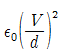
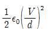
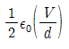
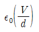
(정답률: 72%)
12. 내경 a[m], 외경 b[m]인 동심구 콘덴서의 내구를 접지했을 때의 정전용량은 몇 [F]인가?
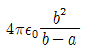
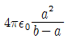
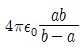
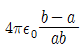
(정답률: 45%)
13. 직류 500[V] 절연저항계로 절연저항을 측정하니 2[MΩ]이 되었다면 누설전류[μA]는?
- 25
- 250
- 1000
- 1250
(정답률: 79%)
14. 평등 자계 내에 놓여 있는 전류가 흐르는 직선도선이 받는 힘에 대한 설명으로 틀린 것은?
- 힘은 전류에 비례한다.
- 힘은 자장의 세기에 비례한다.
- 힘은 도선의 길이에 반비례한다.
- 힘은 전류의 방향과 자장의 방향과의 사이각의 정현에 관계된다.
(정답률: 68%)
15. 그림과 같이 진공중에 자극면적이 2[cm2], 간격이 0.1[cm]인 자성체내에서 포화자속밀도가 2[Wb/m2]일 때 두 자극면 사이에 작용하는 힘의 크기는 약 몇 [N]인가?
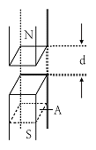
- 53
- 106
- 159
- 318
(정답률: 55%)
16. 지름이 2[m]인 구도체의 표면전계가 5[kV/㎜] 일 때 이 구도체의 표면에서의 전위는 몇 [kV]인가?
- 1×103
- 2×103
- 5×103
- 1×104
(정답률: 53%)
17. 전류가 흐르고 있는 무한 직선도체로부터 2[m] 만큼 떨어진 자유공간 내 P점의 자계의 세기가 4/π[AT/m] 일 때, 이 도체에 흐르는 전류는 몇 [A]인가?
- 2
- 4
- 8
- 16
(정답률: 55%)
18. 다음 내용은 어떤 법칙을 설명한 것인가?
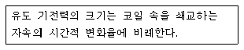
- 쿨롱의 법칙
- 가우스의 법칙
- 맥스웰의 법칙
- 패러데이의 법칙
(정답률: 76%)
19. 공기콘덴서의 극판사이에 비유전율 Es의 유전체를 채운 경우, 동일 전위차에 대한 극판간의 전하량은?
- 1/Es로 감소
- Es배로 증가
- πEs배로 증가
- 불변
(정답률: 76%)
20. 유전체 중을 흐르는 전도전류 iσ와 변위전류 id를 갖게 하는 주파수를 임계주파수 fc, 임의의 주파수를 f라 할 때 유전손실 는?
- fc/2f
- f/2fc
- fc/f
- f/fc
(정답률: 58%)
2과목: 전력공학
21. 송전선로에 충전전류가 흐르면 수전단 전압이 송전단 전압보다 높아지는 현상과 이 현상의 발생원인으로 가장 옳은 것은?
- 페란티 효과, 선로의 인덕턴스 때문
- 페란티 효과, 선로의 정전용량 때문
- 근접 효과, 선로의 인덕턴스 때문
- 근접 효과, 선로의 정전용량 때문
(정답률: 80%)
22. 전력선에 의한 통신선로의 전자 유도 장해의 발생 요인은 주로 무엇 때문인가?
- 영상전류가 흘러서
- 부하전류가 크므로
- 상호 정전용량이 크므로
- 전력선의 교차가 불충분하여
(정답률: 77%)
23. 취수구에 제수문을 설치하는 목적은?
- 유량을 조정한다.
- 모래를 배제한다.
- 낙차를 높인다.
- 홍수위를 낮춘다.
(정답률: 82%)
24. 양수량 Q[m3/s], 총양정 h[m], 펌프효율 η인 경우 양수펌프용 전동기의 출력 P[kW]는? (단, k는 상수이다.)
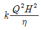
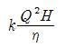
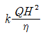
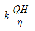
(정답률: 69%)
25. 고압 수전설비를 구성하는 기기로 볼 수 없는 것은?
- 변압기
- 변류기
- 복수기
- 과전류계전기
(정답률: 68%)
26. 공통중성선 다중접지 3상 4선식 배전선로에서 고압측(1차측) 중성선과 저압측(2차측) 중성선을 전기적으로 연결하는 목적은?
- 저압측의 단락사고를 검출하기 위함
- 저압측의 접지사고를 검출하기 위함
- 주상변압기의 중성선측 부싱(bushing)을 생략하기 위함
- 고저압 혼촉시 수용가에 침입하는 상승전압을 억제하기 위함
(정답률: 68%)
27. 차단기의 정격 차단시간에 대한 정의로써 옳은 것은?
- 고장 발생부터 소호까지의 시간
- 트립 코일 여자부터 소호까지의 시간
- 가동접촉자 개극부터 소호까지의 시간
- 가동접촉자 시동부터 소호까지의 시간
(정답률: 72%)
28. 154/22.9[kV], 40[MVA] 3상 변압기의 %리액턴스가 14[%]라면 고압측으로 환산한 리액턴스는 약 몇 [Ω]인가?
- 95
- 83
- 75
- 61
(정답률: 57%)
29. 보호계전기의 기본 기능이 아닌 것은?
- 확실성
- 선택성
- 유동성
- 신속성
(정답률: 66%)
30. 6[kV]급의 소내 전력공급용 차단기로써 현재 가장 많이 채택하는 것은?
- OCB
- GCB
- VCB
- ABB
(정답률: 69%)
31. 수용가군 총합의 부하율은 각 수용가의 수용분 및 수용가 사이의 부등률이 변화할 때 옳은 것은?
- 부등률과 수용률에 비례한다.
- 부등률에 비례하고 수용률에 반비례한다.
- 수용률에 비례하고 부등률에 반비례한다.
- 부등률과 수용률에 반비례한다.
(정답률: 57%)
32. 3상 3선식 3각형 배치의 송전선로가 있다. 선로가 연가되어 각 선간의 정전용량이 0.007[㎌/km], 각 선의 대지정전용량은 0.002[㎌/km] 라고 하면 1선의 작용정전용량은 몇 [㎌/km]인가?
- 0.03
- 0.023
- 0.012
- 0.006
(정답률: 70%)
33. 3상 Y결선된 발전기가 무부하 상태로 운전 중 b상 및 c상에서 동시에 직접접지 고장이 발생 하였을 때 나타나는 현상으로 틀린 것은?
- a상의 전류는 항상 0이다.
- 건전상의 a상 전압은 영상분 전압의 3배와 같다.
- a상의 정상분 전압과 역상분 전압은 항상 같다.
- 영상분 전류와 역상분 전류는 대칭성분 임피던스에 관계없이 항상 같다.
(정답률: 48%)
34. 전선로에 댐퍼(damper)를 사용하는 목적은?
- 전선의 진동방지
- 전력손실 경감
- 낙뢰의 내습방지
- 많은 전력을 보내기 위하여
(정답률: 82%)
35. 배전선로의 손실을 경감시키는 방법이 아닌 것은?
- 전압 조정
- 역률 개선
- 다중접지방식 채용
- 부하의 불평형 방지
(정답률: 56%)
36. 최대 출력 350[MW], 평균 부하율 80[%]로 운전되고 있는 화력발전소의 10일간 중유 소비량이 1.6×107[리터] 라고 하면 발전단에서의 열효율은 몇 [%] 인가? (단, 중유의 열량은 10,000kcal/l] 이다.)
- 35.3
- 36.1
- 37.8
- 39.2
(정답률: 44%)
37. 전압과 역률이 일정할 때 전력을 몇 [%] 증가시키면 전력손실이 2배로 되는가?
- 31
- 41
- 51
- 61
(정답률: 58%)
38. 어느 발전소에서 합성 임피던스가 0.4[%](10MVA 기준)인 장소에 설치하는 차단기의 차단용량은 몇 [MVA] 인가?
- 10
- 250
- 1,000
- 2,500
(정답률: 57%)
39. 주상변압기의 1차측 전압이 일정할 경우 2차측 부하가 변하면, 주상변압기의 동손과 철손은 어떻게 되는가?
- 동손과 철손은 모두 변한다.
- 동손은 일정하고, 철손이 변한다.
- 동손은 변하고, 철손은 일정하다.
- 동손과 철손은 모두 변하지 않는다.
(정답률: 68%)
40. 3상 3선식 변압기 결선 방식이 아닌 것은?
- △ 결선
- V 결선
- T 결선
- Y 결선
(정답률: 76%)
3과목: 전기기기
41. 3상 동기 발전기를 병렬운전 하는 경우 필요한 조건이 아닌 것은?
- 회전수가 같다.
- 상회전이 같다.
- 발생 전압이 같다.
- 전압 파형이 같다.
(정답률: 55%)
42. 단상유도전압조정기의 1차 권선과 2차 권선의 축 사이의 각도를 α라 하고 양 권선의 축이 일치할 때 2차 권선의 유기전압을 E2, 전원전압을 V1, 부하측의 전압을 V2라고 하면 임의의 각 α일 때의 V2는?
- V2=V1+E2cosα
- V2=V1-E2cosα
- V2=V1+E2sinα
- V2=V1-E2sinα
(정답률: 55%)
43. 변압기의 절연유로서 갖추어야 할 조건이 아닌 것은?
- 비열이 커서 냉각효과가 클 것
- 절연저항 및 절연내력이 적을 것
- 인화점이 높고 응고점이 낮을 것
- 고온에서도 석출물이 생기거나 산화하지 않을 것
(정답률: 75%)
44. 6극 60[Hz]의 3상 권선형 유도전동기가 1140[rpm]의 정격속도로 회전할 때 1차측 단자를 전환해서 상회전 방향을 반대로 바꾸어 역전제동을 하는 경우 제동토크를 전부하 토크와 같게 하기 위한 2차 삽입저항 R[Ω]은? (단, 회전자 1상의 저항은 0.0⑤[Ω], Y 결선이다.)
- 0.19
- 0.27
- 0.38
- 0.5
(정답률: 37%)
45. 브러시리스 모터(BLDC)의 회전자 위치 검출을 위해 사용하는 것은? (문제 오류로 실제 시험에서는 가, 다번이 정답처리 되었습니다. 여기서는 가번을 누르면 정답 처리 됩니다.)
- 홀(Hall) 소자
- 리니어 스케일
- 회전형 엔코더
- 회전형 디코더
(정답률: 65%)
46. 전기자저항이 0.04[Ω]인 직류분권발전기가 있다. 단자전압 100[V], 회전속도 1000[rpm]일 때 전기자 전류는 50[A]라 한다. 이 발전기를 전동기로 사용할 때 전동기의 회전속도는 약 몇 [rpm]인가? (단, 전기자반작용은 무시한다.)
- 759
- 883
- 894
- 961
(정답률: 58%)
47. 유도 발전기에 대한 설명으로 틀린 것은?
- 공극이 크고 역률이 동기기에 비해 좋다.
- 병렬로 접속된 동기기에서 여자전류를 공급받아야 한다.
- 농형 회전자를 사용할 수 있으므로 구조가 간단하고 가격이 싸다.
- 선로에 단락이 생기면 여자가 없어지므로 동기기에 비해 단락전류가 작다.
(정답률: 43%)
48. 직류기의 전기자에 사용되지 않는 권선법은?
- 2층권
- 고상권
- 폐로권
- 단층권
(정답률: 61%)
49. 직류 분권전동기의 정격전압 200[V], 정격전류 1⑤[A], 전기자 저항 및 계자 회로의 저항이 각각 0.1[Ω] 및 40[Ω]이다. 기동전류를 정격전류의 150[%]로 할 때의 기동 저항은 약 몇 [Ω]인가?
- 0.46
- 0.92
- 1.08
- 1.21
(정답률: 39%)
50. 동기 발전기의 단락비를 계산하는 데 필요한 시험의 종류는?
- 동기화 시험, 3상 단락시험
- 부하포화시험, 동기화 시험
- 무부하 포화시험, 3상 단락시험
- 전기자 반작용 시험, 3상 단락시험
(정답률: 78%)
51. 변압기에서 부하에 관계없이 자속만을 만드는 전류는?
- 철손전류
- 자화전류
- 여자전류
- 교차전류
(정답률: 70%)
52. 변압기의 정격을 정의한 것 중 옳은 것은?
- 전부하의 경우 1차 단자전압을 정격 1차 전압이라 한다.
- 정격 2차 전압은 명판에 기재되어 있는 2차권선의 단자 전압이다.
- 정격 2차 전압을 2차 권선의 저항으로 나눈 것이 정격 2차 전류이다.
- 2차 단자 간에서 얻을 수 있는 유효전력을 [kW]로 표시 한 것이 정격출력이다.
(정답률: 52%)
53. 저항부하를 갖는 단상 전파제어 정류기의 평균 출력 전압 은? (단, α는 사이리스터의 점호각, Vm은 교류 입력 전압의 최대값이다.
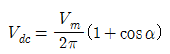
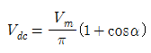
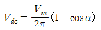
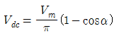
(정답률: 52%)
54. 동기 전동기의 V곡선(위상특성)에 대한 설명으로 틀린 것은?
- 횡축에 여자전류를 나타낸다.
- 종축에 전기자전류를 나타낸다.
- V곡선의 최저점에는 역률이 0[%]이다.
- 동일출력에 대해서 여자가 약한 경우가 뒤진 역률이다.
(정답률: 71%)
55. 발전기의 종류 중 회전계자형으로 하는 것은?
- 동기 발전기
- 유도 발전기
- 직류 복권발전기
- 직류 타여자발전기
(정답률: 68%)
56. 10[kW], 3상, 200[V] 유도전동기의 전부하 전류는 약 몇 [A]인가? 단, 효율 및 역률 85[%] 이다.
- 60
- 80
- 40
- 20
(정답률: 56%)
57. 단상 유도전동기에서 기동토크가 가장 큰 것은?
- 반발 기동형
- 분상 기동형
- 콘덴서 전동기
- 세이딩 코일형
(정답률: 76%)
58. 변압기 온도시험을 하는데 가장 좋은 방법은?
- 실 부하법
- 반환 부하법
- 단락 시험법
- 내전압 시험법
(정답률: 64%)
59. 전기기기에 있어 와전류손(Eddy current loss)을 감소시키기 위한 방법은?
- 냉각압연
- 보상권선 설치
- 교류전원을 사용
- 규소강판을 성층하여 사용
(정답률: 75%)
60. 동기발전기에서 전기자전류를 I, 유기기전력과 전기자전류와의 위상각을 θ라 하면 직축 반작용을 나타내는 성분은?
- Itanθ
- Icotθ
- Isinθ
- Icosθ
(정답률: 56%)
4과목: 회로이론
61. 자동제어의 각 요소를 블록선도로 표시할 때 각 요소는 전달함수로 표시하고, 신호의 전달경로는 무엇으로 표시하는가?
- 전달함수
- 단자
- 화살표
- 출력
(정답률: 69%)
62. t=0에서 스위치 S를 닫을 때의 전류 i(t)는?
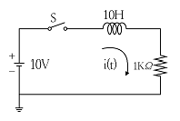
- 0.01(1-e-t)
- 0.01(1+e-t)
- 0.01(1-e-100t)
- 0.01(1+e-100t)
(정답률: 61%)
63. [Var]는 무엇의 단위인가?
- 효율
- 유효전력
- 피상전력
- 무효전력
(정답률: 72%)
64. 다음과 같은 4단자 회로에서 영상 임피던스[Ω]는?
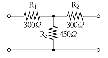
- 200
- 300
- 450
- 600
(정답률: 61%)
65. 임피던스 Z=15+j4[Ω]의 회로에 I=5(2+j)[A]의 전류를 흘리는데 필요한 전압 V[V]는?
- 10(26+j23)
- 10(34+j23)
- 5(26+j23)
- 5(34+j23)
(정답률: 65%)
66.
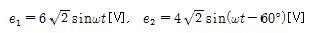
일 때, e1-e2의 실효값[V]은?- √2
- 4
- 2√7
- 2√13
(정답률: 61%)
67. 다음 회로에서 4단자 정수 A, B, C, D 중 C의 값은?
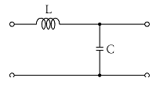
- 1
- jwL
- jwC
- 1+jw(L+C)
(정답률: 69%)
68. 회로에서 V30과 V15는 각각 몇 [V] 인가?
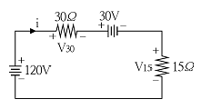
- V30=60, V15=30
- V30=80, V15=40
- V30=90, V15=45
- V30=120, V15=60
(정답률: 57%)
69. 그림과 같은 비정현파의 주기함수에 대한 설명으로 틀린 것은?
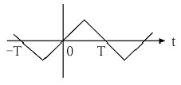
- 기함수파이다.
- 반파 대칭이다.
- 직류성분은 존재하지 않는다.
- 홀수차의 정현항 계수는 0이다.
(정답률: 43%)
70. 그림에서 10[Ω]의 저항에 흐르는 전류는 몇 [A]인가?
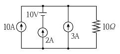
- 13
- 14
- 15
- 16
(정답률: 75%)
71. 3상 불평형 전압에서 불평형률은?
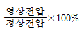
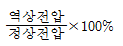
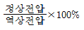
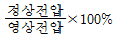
(정답률: 73%)
72. 그림은 평형 3상 회로에서 운전하고 있는 유도전동기의 결선도이다. 각 계기의 지시가 W1=2.36[kW], W2=5.95[kW], V=200[V], I=30[A]일 때, 이 유도 전동기의 역률은 약 몇 [%]인가?
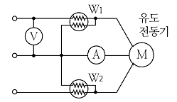
- 80
- 76
- 70
- 66
(정답률: 52%)
73. 기본파의 30[%]인 제 3고조파와 기본파의 20[%]인 제5고조파를 포함한 전압파의 왜형률은?
- 0.21
- 0.31
- 0.36
- 0.42
(정답률: 70%)
74. 코일의 권수N=1000[회], 저항 R=10[Ω]이다. 전류 I=10[A]를 흘릴 때 자속 ø=3×10-2[Wb] 이라면 이 회로의 시정수[s]는?
- 0.3
- 0.4
- 3.0
- 4.0
(정답률: 65%)
75. 800[kW], 역률 80[%]의 부하가 있다. 1/4시간 동안 소비되는 전력량[kWh]은?
- 800
- 600
- 400
- 200
(정답률: 57%)
76.
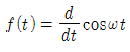
를 라플라스 변환하면?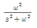
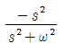
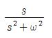
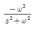
(정답률: 38%)
77. 3상 불평형 전압을Va, Vb, Vc라고 할 때 정상전압 [V]은? (단,
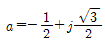
이다.)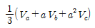
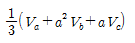
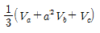
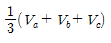
(정답률: 63%)
78. 평형 3상 Y결선 회로의 선간전압 Vl, 상전압 Vp, 선전류 Il, 상전류가 Ip 일 때 다음의 관련식 중 틀린 것은? (단, Py는 3상 부하전력을 의미한다.)(오류 신고가 접수된 문제입니다. 반드시 정답과 해설을 확인하시기 바랍니다.)
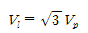
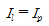
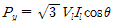
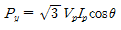
(정답률: 66%)
79. 그림과 같이 접속된 회로에 평형 3상 전압 E[V]를 가할 때의 전류 Il [A]은?
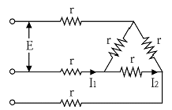
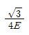
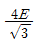
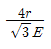
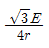
(정답률: 59%)
80. 그림과 같은 커패시터 C의 초기 전압이 V(0)일 때 라플라스 변환에 의하여 s함수로 표시된 등가회로로 옳은 것은?
(정답률: 44%)
5과목: 전기설비기술기준 및 판단 기준
81. 옥내배선의 사용전압이 220[V]인 경우 금속관 공사의 기술기준으로 옳은 것은?
- 금속관에는 제3종 접지공사를 하였다.
- 전선은 옥외용 비닐절연전선을 사용하였다.
- 금속관과 접속부분의 나사는 3턱 이상으로 나사결합을 하였다.
- 콘크리트에 매설하는 전선관의 두께는 1.0㎜를 사용하였다.
(정답률: 54%)
82. 폭발성 또는 연소성의 가스가 침입할 우려가 있는 지중함에 그 크기가 몇 [m3] 이상의 것은 통풍장치 기타 가스를 방산시키기 위한 적당한 장치를 시설하여야 하는가?
- 0.9
- 1.0
- 1.5
- 2.0
(정답률: 58%)
83. 차량, 기타 중량물의 압력을 받을 우려가 없는 장소에 지중 전선로를 직접 매설식에 의하여 매설하는 경우에는 매설 깊이를 몇 [cm] 이상으로 하여야 하는가?(오류 신고가 접수된 문제입니다. 반드시 정답과 해설을 확인하시기 바랍니다.)
- 40
- 60
- 80
- 100
(정답률: 63%)
84. 전력용 커패시터의 용량 15,000[kVA] 이상은 자동적으로 전로로부터 차단하는 장치가 필요하다. 자동적으로 전로로부터 차단하는 장치가 필요한 사유로 틀린 것은?
- 과전류가 생긴 경우
- 과전압이 생긴 경우
- 내부에 고장이 생긴 경우
- 절연유의 압력이 변화하는 경우
(정답률: 65%)
85. 고압 가공전선로의 지지물로 철탑을 사용한 경우 최대 경간은 몇 [m] 이하이어야 하는가?
- 300
- 400
- 500
- 600
(정답률: 63%)
86. 무선용 안테나를 지지하는 목주의 풍압하중에 대한 안전율은?
- 1.2 이상
- 1.5 이상
- 2.0 이상
- 2.2 이상
(정답률: 67%)
87. 목주, A종 철주 및 A종 철근 콘크리트주 지지물을 사용할 수 없는 보안공사는?
- 고압 보안공사
- 제1종 특고압 보안공사
- 제2종 특고압 보안공사
- 제3종 특고압 보안공사
(정답률: 67%)
88. 특고압 가공전선로의 지지물로 사용하는 목주의 풍압하중에 대한 안전율은 얼마 이상이어야 하는가?
- 1.2
- 1.5
- 2.0
- 2.5
(정답률: 62%)
89. 전기집진장치에서 변압기로부터 정류기에 이르는 케이블을 넣는 방호장치의 금속제 부분 및 케이블의 피복에 사용하는 금속체에는 원칙적으로 몇 종 접지공사를 하여야 하는가?(오류 신고가 접수된 문제입니다. 반드시 정답과 해설을 확인하시기 바랍니다.)
- 제1종 접지공사
- 제2종 접지공사
- 제3종 접지공사
- 특별 제3종 접지공사
(정답률: 29%)
90. 금속제 지중 관로에 대하여 전식 작용에 의한 장해를 줄 우려가 있어 배류시설에 사용되는 선택 배류기를 보호할 목적으로 시설하여야 하는 것은?(오류 신고가 접수된 문제입니다. 반드시 정답과 해설을 확인하시기 바랍니다.)
- 피뢰기
- 유입 개폐기
- 과전류 차단기
- 과전압 계전기
(정답률: 49%)
91. 진열장 안의 사용전압이 400[V] 미만인 저압 옥내배선으로 외부에서 보기 쉬운 곳에 한하여 시설할 수 있는 전선은? 단, 진열장은 건조한 곳에 시설하고 또한 진열장 내부를 건조한 상태로 사용하는 경우이다.
- 단면적이 0.75[mm2] 이상인 코드 또는 캡타이어 케이블
- 단면적이 0.75[mm2] 이상인 나전선 또는 캡타이어 케이블
- 단면적이 1.25[mm2] 이상인 코드 또는 절연전선
- 단면적이 1.25[mm2] 이상인 나전선 또는 다심형 전선
(정답률: 57%)
92. 저압 옥내배선을 가요전선관 공사에 의해 시공하고자 한다. 이 가요전선관에 설치하는 전선으로 단선을 사용할 경우 그 단면적은 최대 몇 [mm2] 이하이어야 하는가? (단, 알루미늄선은 제외한다.)
- 2.5
- 4
- 6
- 10
(정답률: 33%)
93. ACSR을 사용한 고압가공전선의 이도계산에 적용되는 안전율은?
- 2.0
- 2.2
- 2.5
- 3
(정답률: 62%)
94. 변압기의 고압측 전로의 1선 지락전류가 4[A]일 때, 일반적인 경우의 제2종 접지저항 값은 몇 [Ω] 이하로 유지되어야 하는가?
- 18.75
- 22.5
- 37.5
- 52.5
(정답률: 47%)
95. KS C IEC 60364에서 충전부 전체를 대지로부터 절연시키거나 한 점에 임피던스를 삽입하여 대지에 접속시키고, 전기기기의 노출 도전성 부분 단독 또는 일괄적으로 접지 하거나 또는 계통접지로 접속하는 접지계통을 무엇이라 하는가?
- TT 계통
- IT 계통
- TN-C 계통
- TN-S 계통
(정답률: 58%)
96. 전기공급 설비 및 전기사용설비에서 변압기 절연유에 대한 설명으로 옳은 것은?
- 사용전압이 20,000[V] 이상의 중성점 직접접지식 전로에 접속하는 변압기를 설치하는 곳에는 절연유의 구외유출 및 지하침투를 방지하기 위한 설비를 갖추어야 한다.
- 사용전압이 25,000[V] 이상의 중성점 직접접지식 전로에 접속하는 변압기를 설치하는 곳에는 절연유의 구외 유출 및 지하침투를 방지하기 위한 설비를 갖추어야 한다.
- 사용전압이 100,000[V] 이상의 중성점 직접접지식 전로에 접속하는 변압기를 설치하는 곳에는 절연유의 구외 유출 및 지하침투를 방지하기 위한 설비를 갖추어야 한다.
- 사용전압이 150,000[V] 이상의 중성점 직접접지식 전로에 접속하는 변압기를 설치하는 곳에는 절연유의 구외 유출 및 지하침투를 방지하기 위한 설비를 갖추어야 한다.
(정답률: 45%)
97. 발전기ㆍ변압기ㆍ조상기ㆍ계기용변성기ㆍ모선 또는 이를 지지하는 애자는 어떤 전류에 의하여 생기는 기계적 충격에 견디는 것인가?
- 지상전류
- 유도전류
- 충전전류
- 단락전류
(정답률: 66%)
98. 저압전로에서 그 전로에 지락이 생겼을 경우에 0.5초 이내에 자동적으로 전로를 차단하는 장치를 시설하는 경우에는 자동차단기의 정격감도전류가 200[mA] 이면 특별 제3종 접지공사의 저항 값은 몇 [Ω] 이하로 하여야 하는가? (단, 전기적 위험도가 높은 장소인 경우이다.)(관련 규정 개정전 문제로 여기서는 기존 정답인 3번을 누르면 정답 처리됩니다. 자세한 내용은 해설을 참고하세요.)
- 30
- 50
- 75
- 150
(정답률: 51%)
99. 화약류 저장소에 전기설비를 시설할 때의 사항으로 틀린 것은?
- 전로의 대지전압이 400[V] 이하이어야 한다.
- 개폐기 및 과전류차단기는 화약류저장소 밖에 둔다.
- 옥내배선은 금속관배선 또는 케이블배선에 의하여 시설한다.
- 과전류차단기에서 저장소 인입구까지의 배선에는 케이블을 사용한다.
(정답률: 64%)
100. 네온 방전관을 사용한 사용전압 12,000[V] 인 방전등에 사용되는 네온 변압기 외함의 접지공사로서 옳은 것은?(관련 규정 개정전 문제로 여기서는 기존 정답인 3번을 누르면 정답 처리됩니다. 자세한 내용은 해설을 참고하세요.)
- 제1종 접지공사
- 제2종 접지공사
- 제3종 접지공사
- 특별 제3종 접지공사
(정답률: 60%)
B = μ₀ * n * I * A
여기서, B는 기자력, μ₀는 자유공간의 자기유도율, n은 코일의 권수, I는 전류, A는 코일의 면적을 나타낸다.
따라서, n = B / (μ₀ * I * A) = 2000 / (4π * 10^-7 * 5 * 1) = 400회
따라서, 코일의 권수는 400회여야 한다.